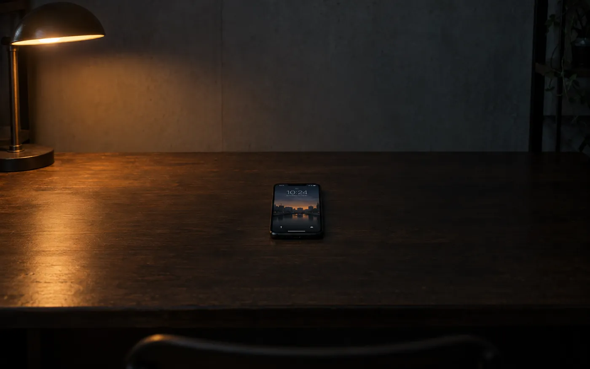

GPT
쓰던 계정 그대로 연결
 멤버십 구성
멤버십 구성
퇴근하고, 주말에, 자기 전에. 다들 폰 하나로 작게 시작합니다.
“AI로 돈 버는 법”을 검색합니다.
강의를 삽니다. 툴을 깝니다. 프롬프트를 외웁니다.
그러다 바빠서 멈춥니다. 몰라서가 아니라, 전부 직접 해야 해서요.
가장 쉬운 방법은, 직접 안 하는 겁니다.
서버도, 계정 연결도, 배포도 앱이 알아서 세웁니다. 당신이 하는 일은 말을 거는 것뿐입니다.

내 AI 계정을 연결하면 멤버십이 더 저렴해집니다.
쓰던 계정 그대로 연결
긴 글과 초안에 강한 쪽
조사와 정리에 붙이는 쪽
지금 뜨는 것부터 보는 쪽
많이 돌려야 할 때
계정이 하나도 없어도 괜찮습니다.
무료로 먼저 굴려보세요.
셋이 동시에 돌아갑니다. 당신은 확인만 합니다.
키워드 조사부터 초안, 썸네일, 예약 발행까지.
현진 · 블로그 담당
주제 찾고, 대본 쓰고, 썸네일까지 올려둡니다.
도윤 · 영상 담당
상세페이지, 가격 감시, 문의 응대를 맡습니다.
예린 · 스토어 담당
무엇이 됐고 무엇이 안 됐는지, 다음 주에 뭘 바꿀지. 물으면 정리해서 올립니다. 양식도, 엑셀도 필요 없습니다.
주간 브리핑 예시
필요한 결정만 위로 올립니다.
로그인하면 바로 등록돼요. 런칭하면 가장 먼저 알려드릴게요.
사전등록되었어요.
런칭하면 알려드릴게요.
지금 다운로드
곧 만나요App Store 곧 만나요Google Play